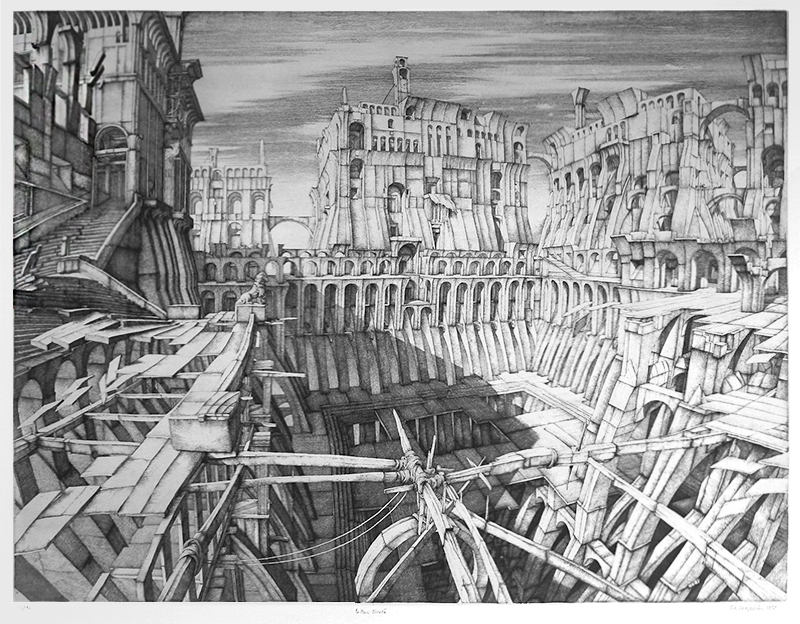

The Labyrinth of Linkages

The labyrinth of linkages refers to various independent details which, when taken together as a larger whole, gain greater meaning. Tolstoy elucidates this concept in a correspondence with the literary critic Nikolay Strakhov, wherein he notes this to be the most fundamental aspect of his art, writing that this concept guided him “in everything, or almost everything that I have written” (Par. 1). The labyrinth of linkages could extend into countless other literary techniques used in the novel—motifs, which hinge on repeated appearances to imbue action with meaning, mimic this pattern as initially innocuous details which accrue great significance. Tolstoy characterizes the technique by an impossibility to express directly in words, writing that it “can only be done indirectly—by using words to describe images, actions, and situations” (Par. 1). It is certainly a paradox, then, to turn around and attempt to render such abstract threads between concepts in words, as Tolstoy explicitly forbade, but nevertheless we might try, though the impact will undoubtedly be less than the effect of the linkages themselves.
A key example of this concept’s use appears in the aftermath of Vronsky’s suicide attempt, as despite his outward recovery from the attempt, Tolstoy strongly implies through his labyrinth of linkages that Vronsky still seeks death, only now through a different means—that of military service.
Immediately after recovering from his wound, Vronsky makes a wildly uncharacteristic decision: he eagerly agrees to a military appointment in Tashkent “without the slightest hesitation” (Tolstoy 436). This proves remarkable, as, in addition to his love for Anna, Vronsky has hitherto been portrayed as an unambitious soldier due also to his liking for his regiment, described as a man who had “the road open to every kind of success, ambition, and vainglory, had turned his back on all that, [...] had chosen to keep those of his regiment and his comrades closest to his heart” (Tolstoy 176). The consequences of this trait become evident when Tolstoy juxtaposes Vronsky with Serpukhovskoy, who used to be his peer (“former comrade”) but has since ascended the ranks (Tolstoy 312). In providing a more ambitious character as a contrast to Vronsky, Tolstoy necessarily portrays him as an unambitious soldier.
Yet despite this quality, Vronsky immediately accepts a position that is not only over three thousand kilometers away, but, as we learn later, incredibly dangerous (Tolstoy 438). The conflict between this action and Vronsky’s established character encourages readers to search for a possible external rationale. And, by dint of Tolstoy’s labyrinth of linkages, there is much evidence to be found within the rest of chapter 23. Both the narration and Vronsky repeatedly use terms related to death to refer to his service, supporting the idea that Vronsky intends to die in Tashkent. However, the linkages which permit this reading are most evident when reading backwards, with the most compelling of them being the phrase “to see [Anna] once and then bury myself and die” (Tolstoy 437). Notably, given that Vronsky is presently trying to see Anna just before going off to his dangerous post in Tashkent, this structure would imply that “bury myself and die” is a stand-in for his mission—thereby reinforcing its position as synonymous with seeking death.
It is also important to examine how Vronsky’s motives for his initial suicide attempt contribute to this reading, with Tolstoy writing that “he had completely liberated himself from one part of his grief” (Tolstoy 436). Notably, it is only one part of his grief which led to his suicide attempt, that of his humiliation, which was cured. The other part, his grief at losing Anna and her love, remains. This is the part that his new attempt at death through military service aims to fix. Accordingly, when Vronsky regains this love for Anna by being allowed to meet with her, he hastily calls off not only this mission, but his entire commission. He has no more grief, one half eliminated by a failed suicide and the other quenched by renewed love. Hence Tolstoy’s labyrinth of linkages allows for the reader to identify a motive, a means, and an expression of desire for death, which are never explicitly brought together, but exist in tandem to be inferred.
Taken on their own, none of these lines are particularly indicative of Vronsky’s continued attempts at death. But when taken together, they comprise the varied strokes of a painting which come together to produce a comprehensible picture. And even then this picture is but a smaller part of another, a tree in a landscape, as the novel later vindicates this reading through a new linkage. After permanently losing Anna at the end of the novel, Vronsky leaves for Serbia with the clear intent of death, reflecting a pattern established here where military service is synonymous with death. Much like the pattern established by chapter 23’s localized linkages, this is an idea which becomes more explicit as the novel progresses, beginning with implications that must be stretched and stitched together but ending with a clear expression.

Works Cited
- Morson, Gary Saul. Anna Karenina in Our Time. Yale University Press, 2007.
- Tolstoy, Leo. Letter to Nikolai Strakhov. 1876.